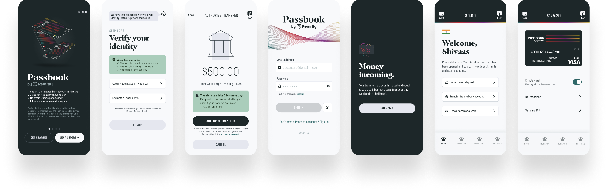

I am currently on a new initiatives team at Remitly, helping build and market a new money management app for immigrants called Passbook.

↑
Passbook is the first physical Remitly product. I designed the debit card, and in the process learned about plastic card manufacturing, technology, and personalization.

↑
I design the UX/UI for the Passbook app: from signup and onboarding, to account management, to money movement, and everything in between.
↑
I also help oversee creative design, for content and marketing collateral.